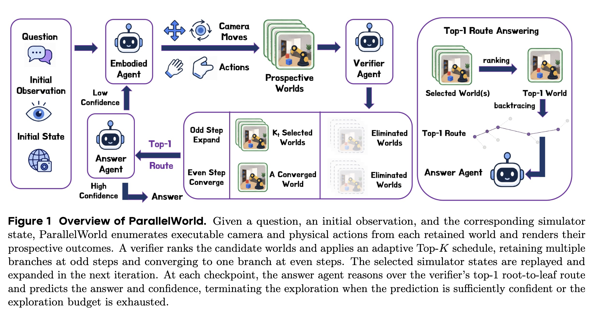

PREPRINT · 2026ParallelWorld
Test-Time Scaling for Embodied Reasoning
A framework for embodied reasoning through parallel, multi-step simulation and verifier-guided search.
RESEARCH / SELECTED PUBLICATIONS
On seeing, remembering, and reasoning about the world.

PREPRINT · 2026Test-Time Scaling for Embodied Reasoning
A framework for embodied reasoning through parallel, multi-step simulation and verifier-guided search.
 PREPRINT · 2026
PREPRINT · 2026